Data Science for Electron Microscopy
Week 11: Uncertainty, Gaussian processes & autonomous EM
FAU Erlangen-Nürnberg
Institute of Micro- and Nanostructure Research


Recap: Week 10 and today’s question
- Week 10: attention, transformers and graph networks — the last architecture family of the course. CNN = grid graph, GNN = sparse graph, transformer = fully connected graph. We read attention maps and learned that attention ≠ explanation.
- The gap every architecture shares: a ViT, a GNN or a U-Net outputs a softmax or a number — always, with the same apparent confidence, whether the input looks like the training data or not.
- Today’s question: how sure is the model, and what should we do with that information? Can we trust this prediction? Where should the microscope measure next?
- Today’s answer, in three steps: (1) quantify uncertainty (ensembles, MC dropout, GPs), (2) certify it (calibration, conformal prediction, OOD gate), (3) act on it (Bayesian optimisation, deep kernel learning, autonomous 4D-STEM).
Road map, learning outcomes and self-study
Road map (≈ 90 min)
- Why point predictions are dangerous · aleatoric vs epistemic
- Uncertainty for deep nets: ensembles, MC dropout, reject threshold
- Are the error bars honest? calibration, ECE, conformal & CQR
- Gaussian processes: prior, posterior, kernels
- Acting on uncertainty: Bayesian optimisation
- Deep kernel learning & automated 4D-STEM
- OOD detection as a trust gate · RL / agents outlook
After today you can
- separate aleatoric from epistemic uncertainty and name a method for each
- read a reliability diagram, compute ECE, build a split-conformal interval
- write down and interpret the two GP posterior formulas
- run a BO loop and choose an acquisition function
- design a trust gate (σ + OOD score) for a deployed EM model
Self-study: notebooks/week11_gp_bo.ipynb (GP → conformal → BO, CPU, < 2 min)
Why a point prediction is dangerous for EM decisions
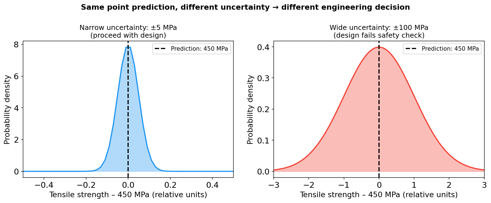
Two predictive distributions with the same point prediction (450 MPa) but radically different uncertainty. Left: ±5 MPa — the part passes the safety factor. Right: ±100 MPa — the design must be rejected. The decision lives in the band, not in the mean.
When point predictions fail in electron microscopy
- Phase identification: “Fe₂O₃” at a boundary pixel — clean decision or coin-flip?
- Extrapolation without warning: trained on 200–500 °C, predicts 600 °C with the same confidence Bishop, Christopher M., (2006).
- New instrument or session: detector swap → confident, smooth-looking, wrong maps. Errors are silent.
- Expensive experiment design: honest error bars tell you what is worth measuring.
- Root cause: empirical-risk minimisation gives the model no incentive to express ignorance.
Aleatoric vs epistemic uncertainty
- Aleatoric (alea = dice): irreducible randomness in the data-generating process — shot noise, detector read noise, grain-to-grain scatter. More data of the same kind does not remove it.
- Epistemic (episteme = knowledge): uncertainty from limited knowledge — we measured 8 compositions out of infinitely many, the model never saw this microscope. It shrinks as we add (the right) data.
- Diagnostic test: “Would measuring more of the same kind of data reduce this uncertainty?” Yes → epistemic. No → aleatoric Bishop, Christopher M., (2006).
- Why it matters: aleatoric sets the achievable precision (and the right loss — Week 2); epistemic tells you where to invest the next instrument-hour and when not to trust the model.
Aleatoric vs epistemic in EM: visual comparison
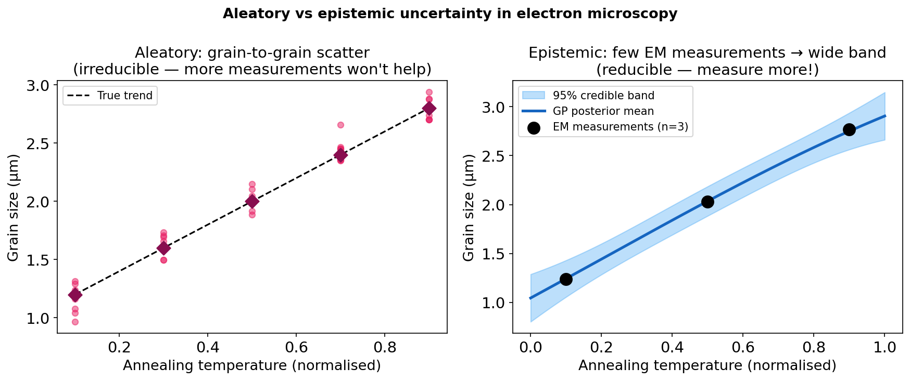
Left: aleatoric — grain-to-grain scatter in grain size at a fixed annealing temperature; more measurements reveal the distribution but do not remove the scatter. Right: epistemic — a GP fitted to 3 EELS measurements is uncertain everywhere except near the measured compositions; measuring more narrows the band.
From a point estimate to a predictive distribution
\[p(y_* \mid \mathbf{x}_*, \mathcal{D}) = \int p(y_* \mid \mathbf{x}_*, \theta)\, p(\theta \mid \mathcal{D})\, d\theta\]
\[ \underbrace{\mathrm{Var}[y_*]}_{\text{total}} = \underbrace{\mathbb{E}_{\theta}\big[\sigma_\epsilon^2(\mathbf{x}_*;\theta)\big]}_{\text{aleatoric}} + \underbrace{\mathrm{Var}_{\theta}\big[\mu(\mathbf{x}_*;\theta)\big]}_{\text{epistemic}} \]
- ERM / MSE returns one \(\hat\theta\) → one number \(\hat y\) (MSE = MLE under Gaussian noise, Week 4). Bayesian averaging over plausible \(\theta\) returns a distribution.
- Epistemic term = disagreement between plausible models. Near data they agree; away from data they disagree Murphy, Kevin P., (2012).
- Every method today approximates this integral: ensembles (M samples of \(\theta\)), MC dropout (random masks), GPs (exact, closed form).
Uncertainty for deep networks: ensembles and MC dropout
Deep ensembles Lakshminarayanan, Balaji et al., (2017)
- Train \(M \approx 5\) networks from different random initialisations / data orders.
- Mean of members = prediction; spread = epistemic uncertainty.
- Different local minima → genuine diversity → best empirical calibration of simple NN methods.
- Cost: \(M\times\) training, \(M\times\) inference (parallelisable).
MC dropout Gal, Yarin et al., (2016)
- Keep dropout on at inference; run \(T \approx 30\) stochastic passes.
- Interpretable as approximate variational inference with a Bernoulli posterior.
- Zero extra training cost — works on any net trained with dropout.
- Pitfall:
model.eval()switches dropout off.
For classification, per pixel \(i\): \(\bar{\mathbf{p}}_i = \frac{1}{T}\sum_t \mathbf{p}_i^{(t)}\), predictive entropy \(H_i = -\sum_c \bar p_{i,c}\log \bar p_{i,c}\).
Ensembles vs MC dropout on a 1-D regression
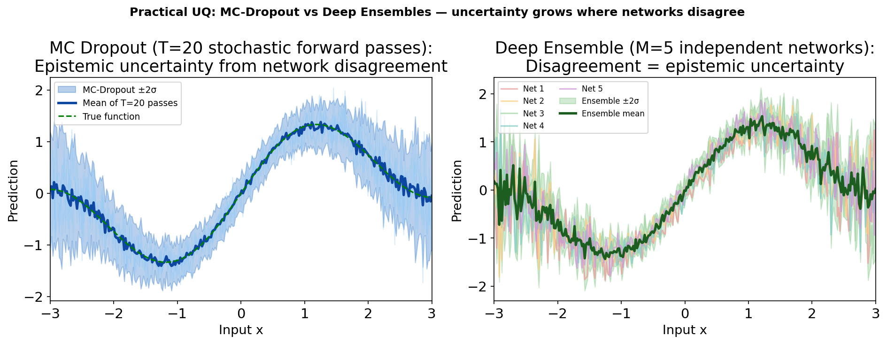
Left: MC dropout — stochastic forward passes (light blue) and mean ±2σ. Right: a deep ensemble of 5 independently trained networks (coloured) and mean ±2σ (green). Both widen away from data; ensembles are empirically better calibrated Lakshminarayanan, Balaji et al., (2017).
Case study: MC dropout for SEM segmentation (MetalDAM)
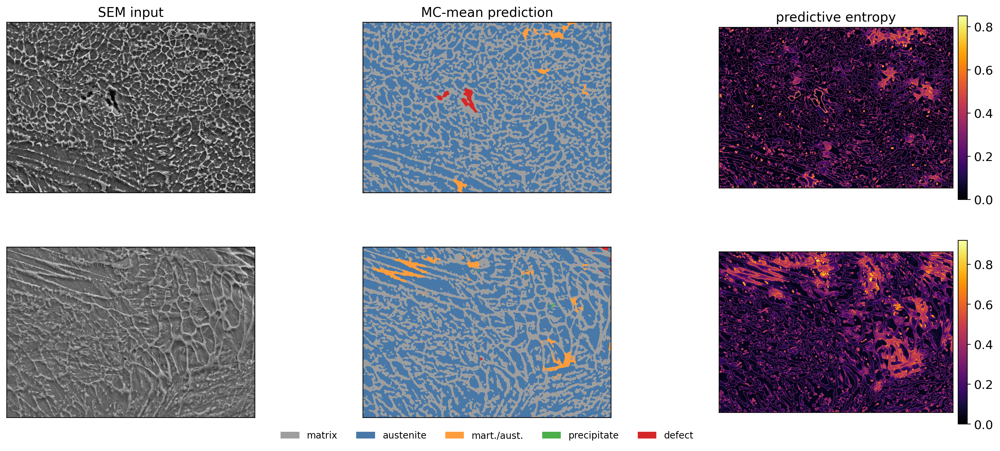
Reject-for-human-review: turning uncertainty into a decision
- Choose an entropy threshold \(\tau\): pixels with \(H_i > \tau\) go to an operator; the rest are auto-classified.
- Sweep \(\tau\) → operating curve (review rate vs defect recall). Report the curve, not one threshold.
- The operating point is a cost decision (analyst time vs missed defect), not an ML decision.
- Honest limit: the residual misses are confidently wrong — low entropy. No entropy threshold recovers them → calibration audit + OOD gate.
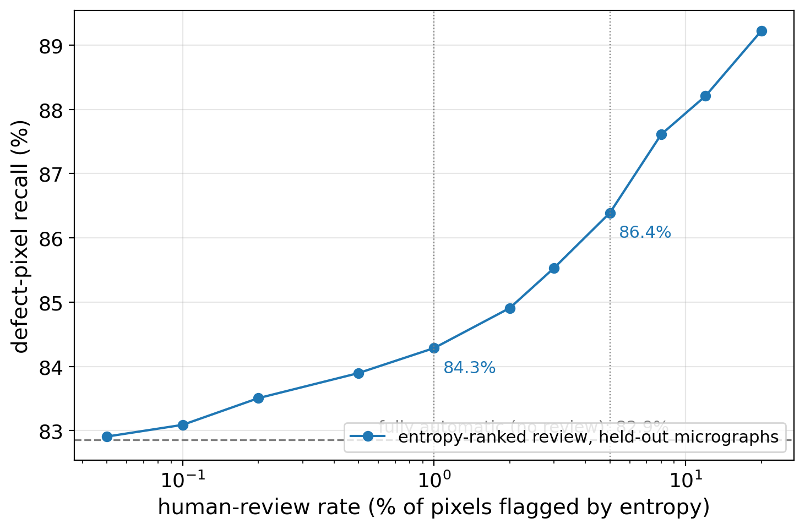
Calibration: are the error bars honest?
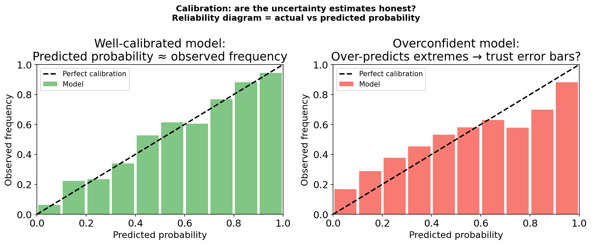
Reliability diagrams. Left: a well-calibrated classifier — predicted confidence matches observed accuracy in each bin. Right: an overconfident model — bins below the diagonal; its “90%” is right far less often than 90% of the time.
Calibration metrics and post-hoc fixes
- Expected Calibration Error over \(B\) confidence bins: \[\mathrm{ECE} = \sum_{b=1}^{B} \frac{|\mathcal{B}_b|}{N}\,\big|\mathrm{acc}(\mathcal{B}_b) - \mathrm{conf}(\mathcal{B}_b)\big|\] 0 = perfect; always show the diagram too — the shape carries the diagnosis.
- Temperature scaling Guo, Chuan et al., (2017): \(\hat{\mathbf{p}} = \mathrm{softmax}(\mathbf{z}/T)\), one scalar \(T\) fitted on a calibration set. Changes confidences, not the argmax — accuracy is unchanged.
- The calibration set must be held out and lab-realistic: same microscope, protocol and settings as deployment, no specimen shared with training (Week 4 leakage rules apply).
- Tool shift breaks calibration: MetalDAM with a simulated detector change — ECE 9.2% → 3.5% after temperature scaling on the new tool; pixel accuracy unchanged (ML-PC U12).
Split conformal prediction: a guarantee without trusting the model
- Split data: train / calibration (never used for fitting) / test.
- Fit any predictor \(\hat f\) on train (GP, random forest, U-Net …).
- Scores on calibration: \(s_i = |y_i - \hat f(\mathbf{x}_i)|\), \(i=1,\dots,n\).
- \(\hat q\) = the \(\lceil (n+1)(1-\alpha)\rceil\)-th smallest score.
- Output \(C(\mathbf{x}_*) = [\hat f(\mathbf{x}_*) - \hat q,\ \hat f(\mathbf{x}_*) + \hat q]\).
- Guarantee Angelopoulos, Anastasios N. et al., (2023): \(\Pr\big(y_* \in C(\mathbf{x}_*)\big) \ge 1-\alpha\) for any predictor and any distribution — provided calibration and test data are exchangeable.
- Classification: same recipe with score \(1-\hat p_{y}(\mathbf{x})\) → prediction sets (“Fe₂O₃ or FeO”) that contain the true class with prob. \(\ge 1-\alpha\).
Split conformal vs CQR on heteroscedastic EM data
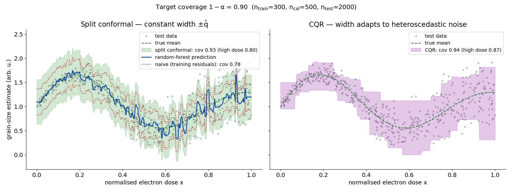
Grain-size estimate vs electron dose with noise growing with dose. Left: a random forest wrapped with split conformal — target coverage 0.90 reached (0.93) with a constant band; the naive training-residual band covers only 0.78. Right: conformalized quantile regression — same guarantee (0.94) with a band that widens with dose. Notebook Part B, SEED=42.
GP bands, conformal intervals, OOD: who guarantees what?
| GP credible band | Split conformal / CQR | Needs in addition | |
|---|---|---|---|
| Guarantee | only if kernel + noise model correct | finite-sample, distribution-free, marginal | — |
| Width | varies with distance to data | constant (split) / adaptive (CQR) | — |
| Holds under shift? | no — kernel may miss the shift | no — exchangeability broken | OOD gate |
| Steers acquisition? | yes (σ is an exploration signal) | not directly | — |
| Cost | \(O(N^3)\) | sort residuals | — |
Rule of thumb: GP / ensembles to explore; conformal to certify in-distribution; an OOD score to decide whether you are in-distribution at all.
Gaussian processes: a distribution over functions
- A GP is a probability distribution over functions: any finite set of values \([f(\mathbf{x}_1),\dots,f(\mathbf{x}_N)]\) is jointly Gaussian. \[f \sim \mathcal{GP}\big(m(\mathbf{x}),\ k(\mathbf{x},\mathbf{x}')\big)\]
- Fully specified by a mean function \(m(\mathbf{x})\) (usually 0 after centring) and a kernel \(k(\mathbf{x},\mathbf{x}') = \mathrm{Cov}[f(\mathbf{x}), f(\mathbf{x}')]\).
- RBF kernel: \(k(\mathbf{x},\mathbf{x}') = \sigma_f^2 \exp\!\big(-\|\mathbf{x}-\mathbf{x}'\|^2 / 2\ell^2\big)\) — nearby inputs have correlated outputs; length-scale \(\ell\) sets the correlation range, \(\sigma_f^2\) the vertical amplitude Rasmussen, Carl Edward et al., (2006).
- The kernel is the modelling decision: it encodes “compositions closer than \(\ell\) have similar Fe³⁺ fractions” — domain knowledge as a covariance.
Conditioning on data: prior → posterior
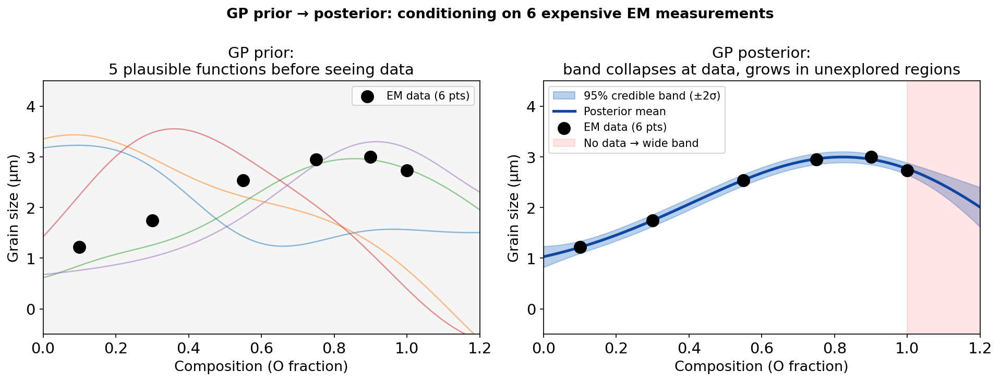
Left: GP prior — plausible curves before any EM data. Right: posterior after 6 EELS measurements (black) — curves pass near the observations; beyond x=1.0 (red shading) the band widens back toward the prior.
The two GP posterior formulas
With noisy observations \(y_i = f(\mathbf{x}_i) + \epsilon_i\), \(\epsilon_i \sim \mathcal{N}(0,\sigma_n^2)\), kernel matrix \([\mathbf{K}]_{ij} = k(\mathbf{x}_i,\mathbf{x}_j)\) and \([\mathbf{k}_*]_i = k(\mathbf{x}_*,\mathbf{x}_i)\):
\[\boxed{\mu_*(\mathbf{x}_*) = \mathbf{k}_*^\top (\mathbf{K} + \sigma_n^2 \mathbf{I})^{-1} \mathbf{y}}\]
\[\boxed{\sigma_*^2(\mathbf{x}_*) = k(\mathbf{x}_*,\mathbf{x}_*) - \mathbf{k}_*^\top (\mathbf{K} + \sigma_n^2 \mathbf{I})^{-1} \mathbf{k}_*}\]
- Mean: a kernel-weighted vote of the training outputs. Variance: prior variance minus what the data explain — never increases with more data.
- \(\sigma_*^2\) depends only on where we measured, not on the \(y\) values → we can plan uncertainty reduction before measuring.
- Far from all data \(\mathbf{k}_* \to \mathbf{0}\) ⇒ \(\sigma_*^2 \to \sigma_f^2\): the GP reverts to the prior — uncertainty balloons. Cost: \(O(N^3)\) Rasmussen, Carl Edward et al., (2006).
- Aleatoric ↔︎ \(\sigma_n^2\) (WhiteKernel); epistemic ↔︎ the posterior variance of \(f\) — the decomposition from earlier, exactly.
The key intuition: uncertainty balloons away from data
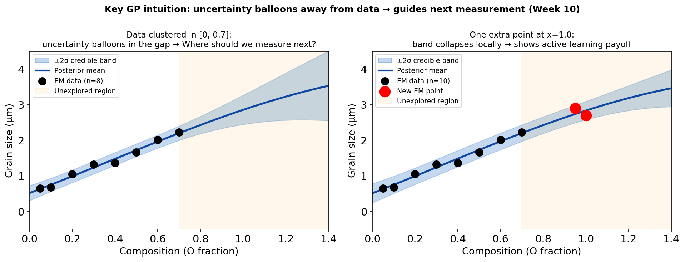
Illustration: left — GP fitted to 8 measurements clustered in [0, 0.7]; the 95% band widens rapidly beyond the data (red). Right — after one extra measurement at x=1.0 the band collapses locally while distant regions stay uncertain. In the notebook (EELS example, SEED=42) σ* at x=1.15 drops from 0.197 to 0.100 (−49%).
Kernel length-scale: smoothness and honesty
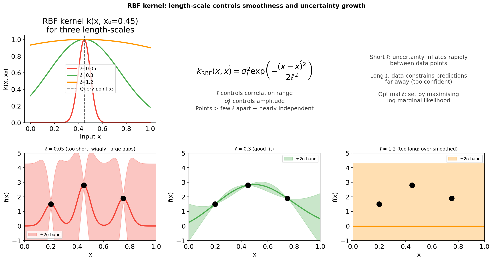
Top-left: RBF kernel for three length-scales. Bottom: GP posteriors with the same data and fixed ℓ. Short ℓ: wiggly mean, band inflates in every gap. Medium ℓ (≈ marginal-likelihood optimum): smooth mean, band opens only where data are missing. Long ℓ: over-smoothed and falsely confident extrapolation.
Hyperparameters, kernel families and practical tips
- Log marginal likelihood — maximise over \(\ell, \sigma_f, \sigma_n\): \[\log p(\mathbf{y}\mid\mathbf{X}) = -\tfrac12\mathbf{y}^\top(\mathbf{K}+\sigma_n^2\mathbf{I})^{-1}\mathbf{y} - \tfrac12\log|\mathbf{K}+\sigma_n^2\mathbf{I}| - \tfrac N2\log 2\pi\] data fit − complexity penalty: an automatic Occam’s razor Rasmussen, Carl Edward et al., (2006). In sklearn:
GaussianProcessRegressor(n_restarts_optimizer=10). - Kernel families: Matérn-5/2 (allows kinks — often better for materials), sums (trend + wiggle), products, ARD (one \(\ell_d\) per input dimension → irrelevant inputs get long \(\ell_d\)).
- Practice: normalise \(\mathbf{x}\) to [0,1] and \(y\) to zero mean / unit variance; check calibration on held-out data; multiple restarts (the likelihood is multimodal).
GP scorecard: where GPs win and where they don’t
| Gaussian process | Deep neural network (+ ensemble) | |
|---|---|---|
| Uncertainty | exact Bayesian (given the kernel) | add-on, approximate |
| Data regime | small, expensive (\(N \lesssim 10^3\)) | large (\(10^4\)–\(10^7\)) |
| Training cost | \(O(N^3)\) (sparse GPs: \(O(NM^2)\)) | \(O(N)\) per epoch |
| Input dimension | struggles beyond ~10–20 raw dims | images, spectra natively |
| Features | hand-chosen via the kernel | learned |
| Interpretability | \(\ell, \sigma_f, \sigma_n\) physically meaningful | opaque weights |
Experimental EM lives in the GP regime (5–500 expensive measurements) — unless inputs are images → deep kernel learning (later today).
From uncertainty to action: explore vs exploit
- Active learning — goal: an accurate model everywhere with few measurements. Acquisition: \(\alpha(\mathbf{x}) = \sigma_*(\mathbf{x})\) (pure exploration).
- Bayesian optimisation (BO) — goal: find the best setting (max SNR, max contrast) with few measurements. Acquisition must balance
- exploitation — measure where \(\mu_*\) is high, and
- exploration — measure where \(\sigma_*\) is high (maybe something better hides there).
- Same GP, different acquisition function. Next measurement: \(\mathbf{x}_{\text{next}} = \arg\max_{\mathbf{x}} \alpha(\mathbf{x})\) Shahriari, Bobak et al., (2016).
- BO-friendly objectives: expensive, no closed form, reasonably smooth, low-to-moderate dimension — i.e. almost every EM acquisition or process parameter.
The experiment-design problem in EM
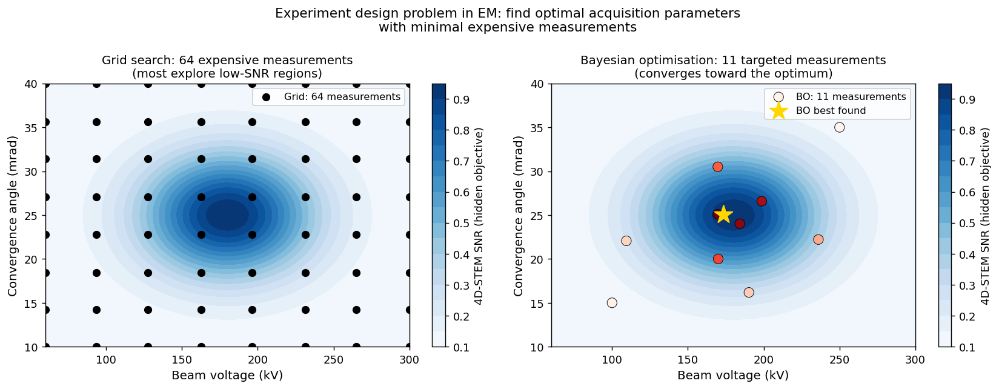
Left: a 64-point grid over (beam voltage × convergence angle) — most measurements land in low-SNR regions. Right: BO with 11 measurements (3 initial + 8 guided) converges toward the optimum (gold star, ≈180 kV, 25 mrad).
The Bayesian optimisation loop
- Initialise: a few measurements at random / Latin-hypercube locations.
- Fit the GP surrogate → \(\mu_*(\mathbf{x}), \sigma_*(\mathbf{x})\) everywhere (milliseconds).
- Acquire: \(\mathbf{x}_{\text{next}} = \arg\max_{\mathbf{x}} \alpha(\mathbf{x})\), evaluated on a dense candidate grid (milliseconds).
- Measure at \(\mathbf{x}_{\text{next}}\) — the expensive step (minutes to hours).
- Update the dataset, go to 2 until the budget is spent. Report the best observed \(\mathbf{x}^+ = \arg\max_i y_i\).
Acquisition functions: formalising explore vs exploit
- Upper Confidence Bound: \(\alpha_{\text{UCB}}(\mathbf{x}) = \mu_*(\mathbf{x}) + \kappa\,\sigma_*(\mathbf{x})\) — “optimism in the face of uncertainty”. \(\kappa=0\): pure exploitation; \(\kappa\to\infty\): pure exploration.
- Expected Improvement (current best \(f^+\), jitter \(\xi\)): \[\alpha_{\text{EI}}(\mathbf{x}) = (\mu_* - f^+ - \xi)\,\Phi(Z) + \sigma_*\,\phi(Z), \qquad Z = \frac{\mu_* - f^+ - \xi}{\sigma_*}\] how much improvement to expect; zero where the objective is already known (\(\sigma_*=0\)).
- Probability of Improvement: \(\alpha_{\text{PI}} = \Phi(Z)\) — how likely any improvement is; greedier than EI.
- All are closed-form in \((\mu_*, \sigma_*)\) → maximise by brute force on a grid in low dimension Shahriari, Bobak et al., (2016).
The BO loop in action on a multi-modal objective
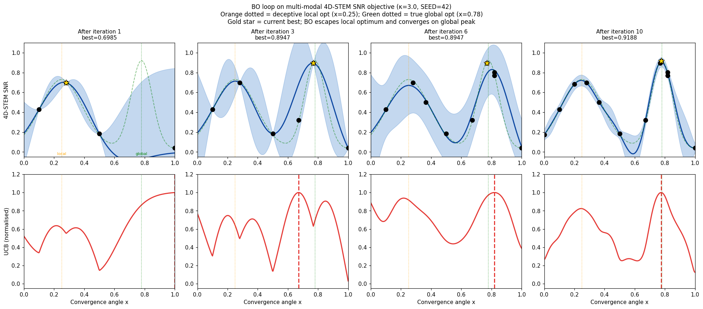
Four snapshots of BO (UCB, κ=3, SEED=42) on a synthetic 4D-STEM SNR vs convergence-angle curve with a broad deceptive local optimum (x≈0.25, orange) and a narrow global peak (x≈0.78, green). Blue: GP ±2σ; dashed red: next query. The loop escapes the local optimum and concentrates measurements on the global peak.
BO vs random search: notebook numbers
- Budget: 3 initial + 12 iterations = 15 measurements (SEED=42).
- BO, UCB κ=3: best 0.9323 at x=0.776 (true optimum x=0.779, y=0.9205).
- Random: best 0.7229 at x=0.236 — stranded at the local optimum.
- κ matters: κ=0.5 → 0.744, κ=2 → 0.744 (stuck); κ=3 → 0.932, κ=5 → 0.933, EI (ξ=0.01) → 0.932.
- Lesson: on multi-modal objectives the amount of exploration matters more than the choice of acquisition function.
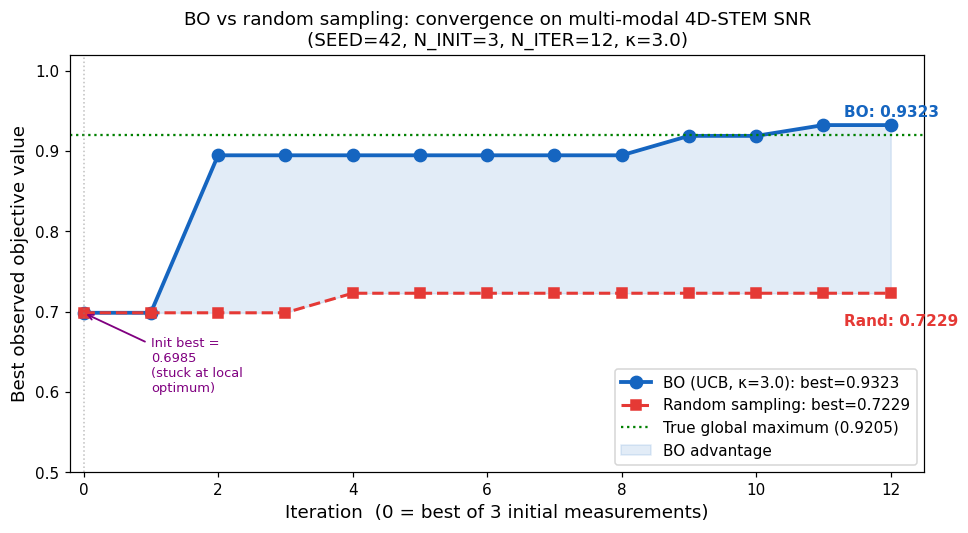
Deep kernel learning: GP uncertainty for image inputs
- Problem: predict a property at an unvisited probe position from its HAADF patch (1024-D). RBF on raw pixels measures noise, not structure.
- Deep kernel Wilson, Andrew G. et al., (2016): a neural feature map \(g(\mathbf{x};\mathbf{w})\), then a base kernel in the learned space: \[k_{\text{DKL}}(\mathbf{x},\mathbf{x}') = k_{\text{RBF}}\big(g(\mathbf{x};\mathbf{w}),\ g(\mathbf{x}';\mathbf{w})\big)\]
- Joint training: weights \(\mathbf{w}\) and GP hyperparameters maximise the same log marginal likelihood.
- Result: GP mean and σ on image inputs → acquisition functions work unchanged. Caveat: needs enough data to learn \(g\).
Automated 4D-STEM: the DKL active-learning workflow
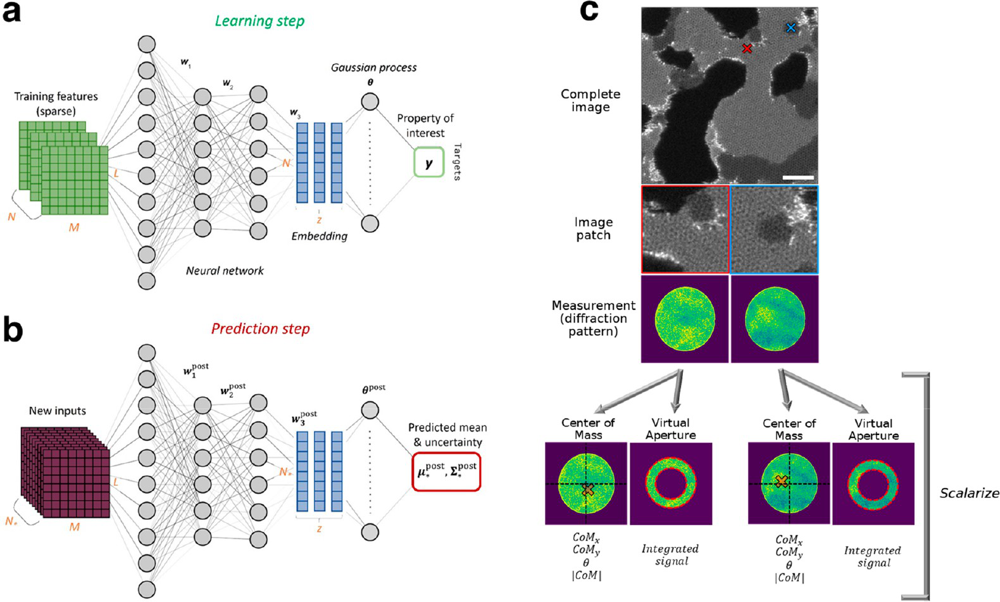
DKL workflow for automated 4D-STEM. (a) Learning: sparse HAADF patches → neural network embedding → GP → scalarised property y. (b) Prediction: mean and uncertainty for all unvisited patches. (c) Measurement: the diffraction pattern at the chosen position is scalarised (centre of mass, virtual aperture). Figure: Roccapriore et al., ACS Nano 16, 7605 (2022) Roccapriore, Kevin M. et al., (2022), doi:10.1021/acsnano.1c11118.
Automated 4D-STEM: results
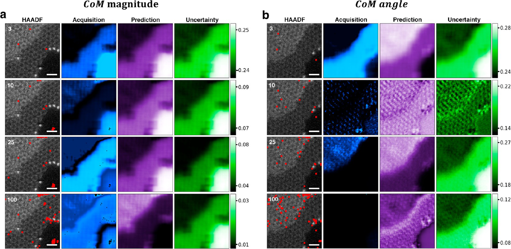
Experiment on graphene (Nion UltraSTEM 100): HAADF with visited points (red), acquisition, predicted CoM magnitude/angle and uncertainty after 3, 10, 25 and 100 steps. The acquisition concentrates on domain boundaries. Figure: Roccapriore et al., ACS Nano 16, 7605 (2022) Roccapriore, Kevin M. et al., (2022), doi:10.1021/acsnano.1c11118.
Choosing the right tool for acquisition
- Standard BO (GP + RBF/Matérn): 1–5 scalar knobs, 10–100 measurements.
- DKL active learning: image-patch or spectral inputs, \(10^2\)–\(10^4\) candidate positions.
- Sparse GPs: \(N > 10^3\), streaming data.
- Always log the trajectory: where the agent measured and where it did not — else invisible selection bias.
- Before trusting the loop: calibrated on this specimen? Still in-distribution? → next section.
When σ lies: out-of-distribution inputs
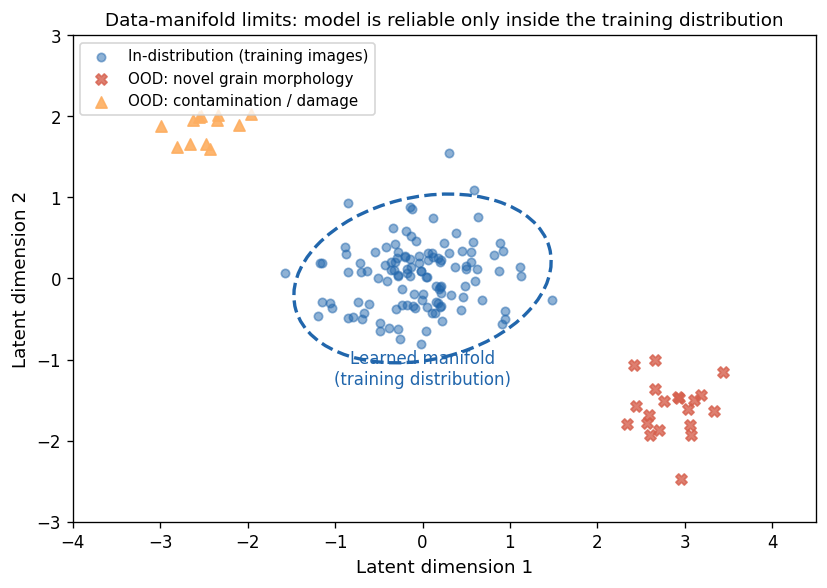
- Calibration ≠ OOD detection. Calibration: “given an in-distribution input, is my confidence honest?” OOD: “is this input like my training data at all?”
- Silent extrapolation: softmax stays at 0.95+ on a new detector; ensemble members all saw the same data and agree; a kernel that does not “see” the shift gives small σ.
- EM sources of shift: new microscope/detector, dose creep and beam damage, thicker specimen, contamination, a new alloy family.
OOD scores and the trust gate
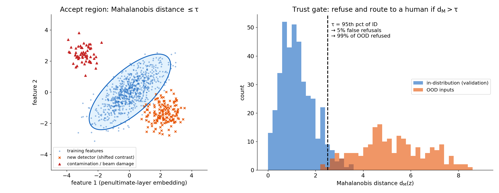
Left: training features (penultimate-layer embedding) with the Mahalanobis accept region; new-detector and contamination inputs fall outside. Right: Mahalanobis distances for in-distribution validation data vs OOD inputs; threshold τ at the 95th percentile of in-distribution → 5% false refusals, 99% of these OOD inputs refused (synthetic illustration, img/make_figures.py).
The trust gate in practice
- Usable OOD scores: Mahalanobis distance of embeddings · ensemble disagreement · GP variance (in a kernel you trust) · autoencoder reconstruction error (Week 9) · nearest-neighbour distance in latent space.
- Gate rule: act automatically only if the uncertainty is small and the OOD score is low. Wide σ + low OOD → measure more (within known territory). Any + high OOD → refuse, route to a human or a cheap exploratory measurement.
- Use at least one score not derived from the model you are gating — surrogate-derived signals fail together.
- Audit trail per decision: model version, calibration set, OOD score and threshold, decision, human review. Periodic blind audits of confidently accepted cases.
- Trust is a system property, not a model property — combine calibration, conformal coverage and an OOD gate (MG U14).
Outlook: reinforcement learning and agents at the microscope
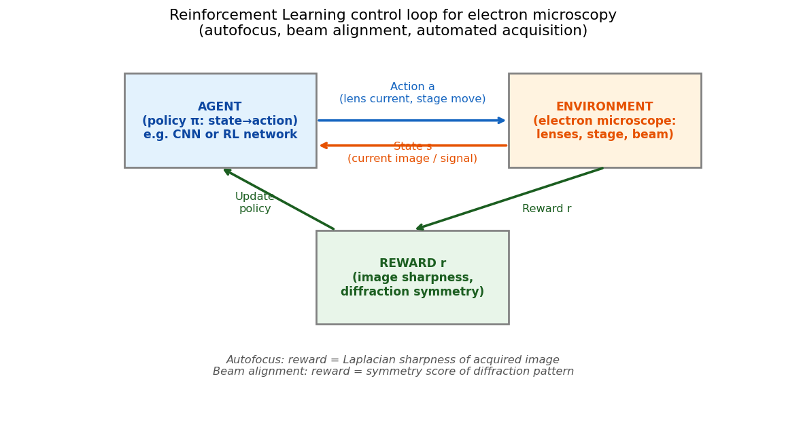
- RL: learn a policy \(\pi(a\mid s)\) maximising \(\mathbb{E}\big[\sum_t \gamma^t r_t\big]\) from rewards — no labels Bishop, Christopher M., (2006).
- Time scales: BO for slow loops (one measurement per minutes–hours); RL policies for fast control (autofocus, stigmation, drift — every 0.1–10 s); DKL in between.
- Agents: LLM orchestrators calling BO, segmentation and analysis tools.
- Risks: reward hacking, sim-to-real gap, silent OOD, selection bias — every agent needs today’s trust gate.
Self-study notebook: GP → conformal → BO
- Notebook:
notebooks/week11_gp_bo.ipynb— CPU, sklearn only, < 2 min 
- Part A — GP regression: 8 simulated EELS measurements, posterior ±2σ, add a point, length-scale exercise.
- Part B — conformal: naive vs split conformal vs CQR on heteroscedastic data; exercise: α sweep and coverage under distribution shift.
- Part C — BO: UCB loop vs random at equal budget; exercise: vary κ, switch to EI.
Real-data extension (optional): MC-dropout U-Net on MetalDAM with reject threshold and tool-shift calibration — Ai4Mat companion notebook (ai4mat.datasets.MetalDAMDataset).
Notebook key results (SEED=42)
- GP (Part A): optimised kernel \(0.476^2\,\mathrm{RBF}(\ell{=}0.373) + \mathrm{White}(1.7\times10^{-4})\); σ* near data 0.0145 vs far 0.1966 (13.5×); one extra point at x=1.0 → σ* at x=1.15: 0.197 → 0.100 (−49%).
- Conformal (Part B, α=0.1): naive training-residual band covers 0.78; split conformal 0.93; CQR 0.94 with a band 2.3× wider at high dose. Under dose shift (1.0–1.3) coverage falls to 0.70 — exchangeability broken.
- BO (Part C): UCB κ=3 best 0.9323 vs random 0.7229 at 15 measurements (+29%); κ ≤ 2 gets stuck at the local optimum (0.744).
Summary
- Quantify: aleatoric (irreducible noise) vs epistemic (lack of knowledge). Ensembles and MC dropout give practical epistemic estimates for deep nets; per-pixel entropy + a reject threshold turns them into decisions.
- Certify: reliability diagram + ECE reveal over-confidence; temperature scaling fixes confidences post hoc; split conformal / CQR give distribution-free coverage if data are exchangeable.
- Model: GPs give exact, input-dependent uncertainty in closed form; σ* balloons away from data; the marginal likelihood picks the kernel.
- Act: BO = GP + acquisition (UCB/EI) in a closed loop; DKL extends it to image inputs → automated, dose-efficient 4D-STEM.
- Guard: OOD scores + σ form a trust gate; trust is a property of the system, logged and audited.
Must-know takeaways
- Aleatoric vs epistemic: “would more data of the same kind reduce it?”
- Deep ensembles / MC dropout: spread of predictions = epistemic signal;
model.eval()disables dropout. - Reliability diagram and ECE; temperature scaling changes confidence, not accuracy.
- Split conformal: \(\hat q\) = \(\lceil (n{+}1)(1{-}\alpha)\rceil\)-th calibration score; guarantee needs exchangeability; CQR adapts the width.
- GP posterior: \(\mu_* = \mathbf{k}_*^\top(\mathbf{K}+\sigma_n^2\mathbf{I})^{-1}\mathbf{y}\), \(\sigma_*^2 = k_{**} - \mathbf{k}_*^\top(\mathbf{K}+\sigma_n^2\mathbf{I})^{-1}\mathbf{k}_*\).
- BO loop + UCB \(\mu_*+\kappa\sigma_*\); too little exploration → stuck in local optima.
- DKL = NN feature map inside a GP kernel → BO on image patches (automated 4D-STEM).
- Calibration ≠ OOD detection; act only if σ is small and the OOD score is low.
Next week: Inverse problems I
- Today: we learned to be honest about what we don’t know — and to measure where it matters.
- Week 12 — Inverse problems I: regularisation, tomography & sensor fusion. Measurements \(\mathbf{y} = \mathcal{A}(\mathbf{x}) + \boldsymbol\epsilon\) rarely are the quantity we want: a tilt series encodes a 3-D structure, a HAADF + EDS pair encodes composition.
- Recovering \(\mathbf{x}\) is ill-posed — many \(\mathbf{x}\) fit the data. Priors and regularisers (Tikhonov, TV) pick a plausible one; the Bayesian view of today (prior × likelihood → posterior) is exactly the language we need.
- Preparation: finish notebook Parts A–C; revisit Week 3 (SVD, conditioning) — the small singular values return as the source of ill-posedness.
Continue
Backup slides
Material moved out of the 90-minute lecture path; useful for questions and self-study.
GP posterior in pictures
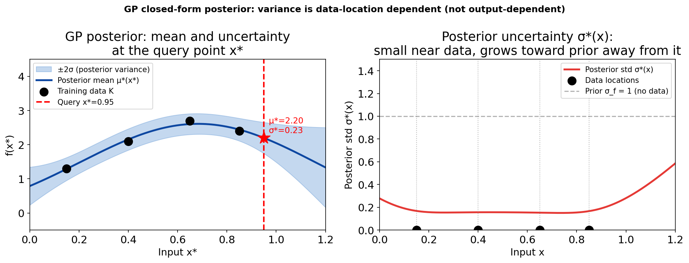
Left: posterior mean and ±2σ band for 4 EELS measurements. Right: posterior standard deviation σ*(x) alone — near zero at the measurement locations, rising toward the prior σ_f in unexplored regions. This σ-map is what active learning and BO consume.
Three acquisition functions on the same GP posterior
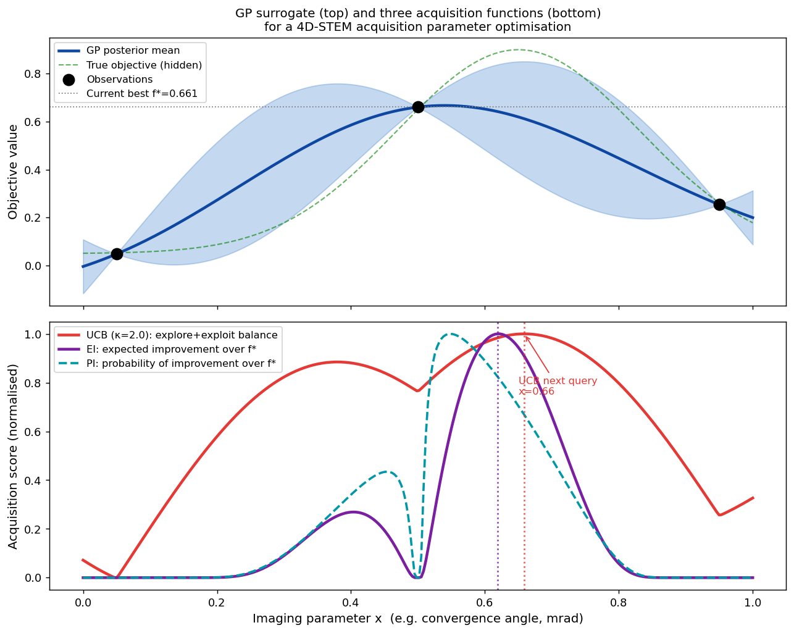
Top: GP surrogate after 3 measurements. Bottom: UCB (κ=2), EI and PI. All agree on the promising region but differ in how sharply they peak; each is maximised on a dense grid.
References

©Philipp Pelz - FAU Erlangen-Nürnberg - Data Science for Electron Microscopy